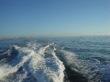
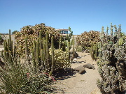
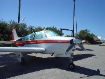
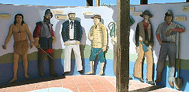
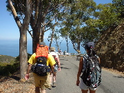
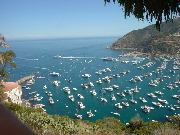

今日からESL(English as a Second Language)クラスに通うため，South Bay Adult Schoolというところに向かいます．
駐車場に車を停めたところ，隣の車にラムダッチャのステッカーが貼ってありました．ダーリン，待つッチャ！かばんを引っ掴んで登録オフィスに向かいます．
登録してみて気付いたのですが，毎週月曜から木曜まで，毎日18時からみっちり3時間というハードなスケジュール．授業料が無料ということで気軽に申し込んだのですが，ちゃんと行けるかどうか心配です．しかし，そこは無料というフットワークの軽さを活かしたいと思います(いきなりサボり宣言)．
ESLクラスの生徒のほとんどは南米からの移民なので，先生も時々説明にスペイン語を使用します．余計わかりません．
どうなることやら．
同僚に誘われて，カタリナ島までハイキングに出かけてきました．
カタリナ島はロサンジェルスの南に位置する小さな島ですが，かつて西部劇映画の撮影でバッファローを持ち込んだところ，逃走して野生化．今ではバッファローバーガーが名物に，という脳の栓がゆるみっぱなしのエピソードが好感度大です．
朝早くに同僚の車でサンペドロ港へ出発．島へは高速船で向かいますが，本当に高速で海上を驀進していくため，船内ではとても立っていられません．船，本気すぎ．生まれて初めて船酔いを経験しました．デッキで水平線を眺めながら「なんでこんなことに…」と考えているといつしか夢の世界へ．起きたら回復してました．早起きは俺の毒だね(個人的)．

デッキでは，かつて日本に住んでいたというアメリカ人に「ドコ，住んでタノ？」と話しかけられてビビりました．埼玉に居たというと「アー，埼玉ネ，ボクもコシガヤに1年住んでタヨ！」．海を越えた地で埼玉トーク．埼玉は世界の共通語ではないかと錯覚してしまいそうです(しません)．
島に着いてから「Eat at Joe」でアメリカンな朝食(トーストとスクランブルエッグとベーコン)を食べながら，高校時代，いかに「D&D」と「Wizardry」に時間を注ぎ込んだかについて同僚と語り合う．同僚は，祖母に「D&Dは悪(Evil)だ！」と怒られていたらしいです．聖書の国は怖いなぁ．
その後，乗り合いバスで山頂まで向かいます．バス停を出発するとすぐに山道に入り，木が生い茂る狭い道をクネクネと登って行きます．なんだか，この風景には妙に見覚えが…．
…死国！
このままこんな道がずっと続いたらどうしようかと思ったのですが，山頂が近くなると荒涼とした岩肌とサボテンが見え始めたので，杞憂に終わりました．車窓からは，ぼつぽつと野生のバッファローを見ることができます．

山頂は小さな空港になっていて，セスナ機が並んでいます．ついでに何故かカウボーイとインディアンも壁画で並んでいます．カウボーイとインディアン以外だと，炭坑夫くらいしか存在意義が分からないのは，僕がよそ者だからですか．
 
というわけで，後は山頂から歩いて降りて行きます．ハイキングというので山道を想像していたのですが，単に車道を降りて行くだけで，いまいち盛り上がりには欠けます．山の中腹からはヨットハーバーが見えますが，こんなにヨットが密集して並んでいると，むしろ気持ち悪いです．
 
そして下まで降りて来ると，すでに14時を回っており，すぐに帰りの高速船に乗り込まなくてはいけません．昼飯は食べる暇がありませんでした．
同僚が「こういうこともあろうかと，一応おやつを持って来た」というので見せてもらったところ，なぜかドラ焼きでした．謎と言えば謎ですが，こちらのエゲつない甘さの菓子ばかり口にしていた舌には，和菓子の控え目な甘さがうれしいです．糖分で疲労も回復．話の種に「まんじゅう怖い」を教えたところ，無茶苦茶ウケてました．
「これから母親と寿司を食べに行く」という同僚と別れて帰宅．同僚，和食好きすぎ．